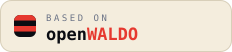

Frequently asked questions.
The short, practical answers. The long versions live in the project docs.
What exactly is OpenWALDO — a dataset, a tool, or a model?
All three layers, with the data at the center. The
index (waldo-index) is the corpus: a git
repository of curated, licensed, provenance-tracked training data.
The toolchain (the waldo CLI) is one
binary that manages the whole lifecycle — ingest, verify, train,
fork, chat, export. The models are what the project
builds from the corpus to prove the whole approach works — every one
carrying a verifiable bill of materials.
I run an AI lab. How does OpenWALDO fit into how we already train?
Use it as your base layer — and spend your effort on the data that makes your models different. Every lab independently re-collects the same foundational corpus: the books, the wikis, the code, the papers, the law. That work is undifferentiated, expensive, and legally fraught — and it’s exactly what a commons is for. Pull OpenWALDO as the substrate for a from-scratch base model, or augment your existing training mix with its license-clean corpora, and put your researchers on the curation, synthesis, and post-training that actually distinguish your models. OpenWALDO isn’t competing with your models; it’s the part of every model that never should have been a competition.
And you get something no private data pipeline can give you: a provable answer to “what is this model based on?” Training on indexed data pins a bill of materials — the exact index commit, manifest hashes, and per-shard licenses — so your customers, your counsel, and your regulators can verify the claim instead of taking your word for it. When part of the diet is OpenWALDO, that part of the audit is already done, in public. Ship the “Based on OpenWALDO” badge with your model and the claim is one click from its proof.
How is this different from other “open” AI projects?
Most “open” releases are open weights: you can download the model, but not see, verify, or rebuild what went into it — a binary without source. A few excellent projects (OLMo, the Common Pile) publish their data too, and OpenWALDO builds on their work. What OpenWALDO adds is the commons infrastructure: a contribution model (git + DCO + review), per-shard licensing, federated hosting, content-addressed verification, and a model lifecycle that records the data-to-weights chain automatically — so the corpus grows permissionlessly, like an open source project, instead of being one lab’s dataset drop.
Do I need an account or permission to use any of this?
No. The index is a public git repository, and every shard of data is anonymously fetchable from its committed URL — reads never require credentials. Clone, fetch, verify, train. You need credentials only to host shards on your own storage, and a GitHub account only to open pull requests.
What can I do with the corpus?
Anything its licenses allow — and because every shard carries its own SPDX license tag, you can filter to exactly the license profile your use requires. In practice: pretrain models from scratch, fine-tune or continue-pretrain existing models, build domain-specific models, run dataset research and ablations, teach with it, or mirror it. The corpus is deliberately ordinary data (zstd-compressed JSONL) so nothing about it locks you into the waldo toolchain.
Can I use the data with existing models and training stacks?
Yes. Shards are plain zstd-compressed JSONL at
stable URLs, verified by sha256 — any training pipeline that can
read JSONL can consume them, with or without the waldo CLI. And the
toolchain itself supports starting from existing weights:
waldo model pull imports a model, and training it on
indexed paths records a BOM for everything from that point
forward. The full audit-all-the-way-down story applies to
from-scratch models, but the corpus and the lineage records work
with the models you already have.
What hardware do I need to train something?
A laptop, to start. The smallest rungs of the growth ladder (10–100M parameters) train on Apple Silicon via MLX or any single GPU — the ten-minute walkthrough produces a real, provenanced model on a MacBook. Bigger rungs use the same commands on bigger machines: PyTorch for single/multi-GPU Linux boxes, torchtitan for multi-node. The tooling scales; your ambition and compute budget set the rung.
Can I run it privately — internal data, air-gapped, my own storage?
Yes. The toolchain has no dependency on the project’s
infrastructure: start a
private tree with waldo index init, point the lookaside
at your own S3 bucket or local storage, and ingest and train on data
that never leaves your network. You get the same determinism,
license tracking, and BOMs — which is exactly what internal
compliance wants — without publishing anything.
How do I contribute data?
Git-style, in four steps: gather openly licensed data into a
directory (however you like — the fetchers/ are worked
examples), run waldo index ingest to convert, pack, and
push the shards to your storage, then git commit -s and
open a pull request. The commit’s DCO sign-off is your attestation
that the data is redistributable under the license you declared;
the diff plus the URLs in it are the entire contribution. CI
re-verifies the whole tree on your PR.
What data qualifies for the official tree?
Content that is genuinely open at the document level: public domain, CC-BY, CC-BY-SA, permissively licensed code (per-file), and synthetic data from generators whose licenses place no restrictions on outputs. The bar applies to the underlying documents, not a dataset’s compilation license — which is why CommonCrawl-derived corpora, gated “research-only” collections, and GPT-distilled synthetic sets don’t qualify, however good they are. The gaps that bar creates (math is the biggest) are the project’s top contribution priorities.
I don’t have data. How else can I help?
Four other ways: code (the Go toolchain — converters, fetchers, training backends), hosting (shard storage and mirrors are federated and contributor-run), review (checking license claims and provenance on data PRs is as valuable as the data itself), and compute (the larger rungs of the growth ladder run on donated or funded cluster time). Docs, examples, and evangelism all count too.
Who hosts the data, and what does it cost the project?
Contributors host their own shards — any S3 bucket or static HTTPS host works, and content addressing means every copy is verifiable and mirrorable. The project itself holds only the small git-tracked metadata. That’s the design: no central storage bill, no single point of failure, and no gatekeeper who can decide the corpus disappears.
How do I audit a model that came from OpenWALDO?
Every model carries a bill of materials: the
exact index commit, the manifest hashes it consumed, the recipe,
tokenizer, and backend of every training run — written into
model.json and shipped human-readable as
PROVENANCE.md on export, with lineage chained across
forks. To audit: read the BOM, check out the index at the pinned
commit, and run waldo index verify --fetch to confirm
every referenced shard exists and matches its hash. At that point
you can inspect any byte the model trained on — or rebuild the
model yourself from the same inputs.
Can a model be reproduced exactly?
The inputs replay exactly: anyone with the BOM gets byte-identical data, the same recipe, and the same architecture. The resulting weights are equivalent but not bit-identical across different hardware, because GPU training isn’t bit-deterministic — the same honest caveat every reproducibility effort in the field carries. What matters for trust is that the claim “this model was built from this data” is checkable, and it is.
Can I use OpenWALDO models and data commercially?
That’s the intent — the official tree deliberately excludes noncommercial and no-derivative licenses. Obligations that do exist (attribution for CC-BY, share-alike tags, code NOTICE files) are recorded per shard, so you — and your counsel — can see exactly what applies and train on precisely the license profile your product allows. The index makes compliance auditable; what your situation requires is between you and your lawyers, as with any open source license question.
What if my content ends up in the corpus and I want it out?
Takedown is a first-class operation, not a support ticket. Removal happens in the open — the shard leaves the index by commit, storage operators garbage-collect it, and because every model records what it trained on, the record of what was used when stays honest. Openness includes the right to leave.
Based on OpenWALDO — say it, and let anyone check it.
If your model trains on indexed data, its bill of materials already proves it — the badge just makes the claim visible. Put it on your model card, your README, or your product page, and link it to the provenance it stands for.

# markdown (model cards, READMEs) [](https://openwaldo.org) <!-- html --> <a href="https://openwaldo.org"><img src="https://openwaldo.org/assets/badges/based-on-openwaldo-dark.svg" alt="Based on OpenWALDO"></a>
The badge means something specific: the model’s training record chains
to a waldo-index commit, so “based on OpenWALDO” is a
checkable statement, not a vibe. Swap -dark
for -light to match your page.